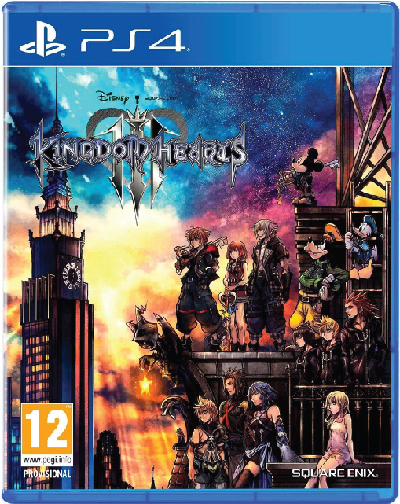
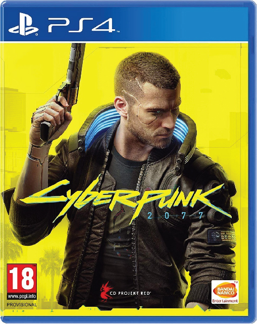
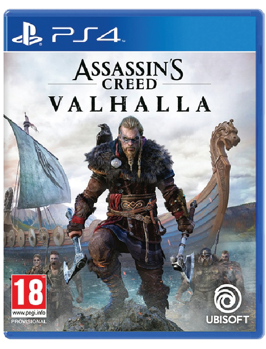

NOTICIAS: Sony cancela la presentación de PS5, la nueva generación tendrá que esperar
A raiz de los disturbios y protestas que se estan dando actualmente en Estados Unidos
De manera inesperada y vía Twitter, Sony acaba de anunciar la cancelación del evento donde iba a presentar PS5 y sus primeros juegos. En un breve comunicado, la compañía japonesa se limita a comunicar que no consideran este momento como «apropiado para celebraciones».
En los últimos días la situación en EE.UU. se complica por momentos. A la crisis desatada por la COVID-19 se suman las protestas y disturbios que siguieron a la muerte de George Lloyd y esos parecen haber sido los detonantes de la decisión de Sony. Desde su punto de vista, no es momento para hablar de videojuegos y tecnología y, probablemente, consideran que el impacto será mucho mayor en un escenario más tranquilo.
«Hemos decidido posponer el evento de PlayStation 5 fijado en el 4 de junio. Entendemos que los jugadores de todo el mundo están deseando ver los juegos de PS5, pero pensamos que este no es un momento apropiado para celebraciones y por ahora, preferimos quedarnos al margen y permitir que se oigan otras voces más importantes» dice la publicación en Twitter que acompaña a estas líneas.
Sony no pone fecha al nuevo evento de presentación, aunque esperemos que sea en las próximas semanas. Según las últimas filtraciones, se había preparado un evento de más de una hora de duración donde, además de la consola, veríamos los primeros juegos exclusivos capaces de aprovechar el potencial de la nueva máquina. Por el momento, toca esperar para conocer a la nueva representante de la próxima generación de consolas.
Juegos confirmados para PS5 hasta el momento
|  | Kingdom hearts 3
Kingdom Hearts III es un videojuego de tipo ARPG desarrollado por Square Enix y que fue publicado por la misma empresa para las consolas PlayStation 4 y Xbox One. Fue anunciado en el E3 2013, y en la D23 Expo 2017 se confirmaría su fecha de lanzamiento para 2020. |
| The last of Us 2
The Last of Us: Part II es un próximo videojuego de acción-aventura desarrollado por Naughty Dog y publicado por Sony. Su lanzamiento está programado para el 19 de junio de 2020. |
|
|  | Cyber Punk 2077
Cyberpunk 2077 es un futuro videojuego desarrollado y publicado por CD Projekt, que se lanzará para Microsoft Windows, PlayStation 4, Xbox One y Google Stadia el 17 de septiembre de 2020. |
|  | Creed Valhalla
Assassin's Creed Valhalla es un futuro videojuego en desarrollo por Ubisoft Montreal y publicado por Ubisoft. Es el decimosegundo en importancia y el vigesimosegundo lanzado dentro de la saga de Assassin Creed, y sucesor al juego del 2018 Assassin's Creed Odyssey. |